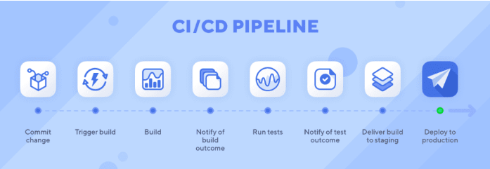
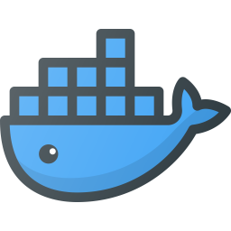

Geração de Pipelines utilizando CI/CD do Gitlab
para deploy de aplicação Docker
Este materia visa a mostrar os resultados obitidos de um projeto de estudo, onde é criado um deploy automatico de aplicação
web utilizando ferramentas de desenvolvimento disponiveis.
Se esta pagina esta disponivel, é porque deu certo!
Tecnologias
HTML: Linguagem de Marcação de Hipertexto
É o bloco de construção mais básico da web. Defina o significado e a estrutura do conteúdo da web. Outras tecnologias além do HTML geralmente são usadas para descrever a aparência/apresentação ( CSS ) ou a funcionalidade/comportamento ( JavaScript ) de uma página da web.
Docker Apache
Para fins de desenvolvimento, utlizaremos a imagem httpd do docker, que é comumente coonhecido como Apache, para a criação de um servidor web, onde esta pagina esta salva e sendo disponibilizada.
O Apache HTTP Server, coloquialmente chamado de Apache, é um aplicativo de servidor Web notável por desempenhar um papel fundamental no crescimento inicial da World Wide Web. Originalmente baseado no servidor NCSA HTTPd, o desenvolvimento do Apache começou no início de 1995, depois que o trabalho no código NCSA parou. O Apache ultrapassou rapidamente o NCSA HTTPd como o servidor HTTP dominante e permaneceu como o servidor HTTP mais popular em uso desde abril de 1996.
GitLab
O Git, é um sistema de controle de versionamento criado por ninguém menos que Linus Torvalds, para auxiliar o desenvolvimento de um grande projeto chamado Linux. Porém, devido à sua qualidade em gerenciar projetos com grandes equipes de trabalho em grupos distribuídos, ele acabou sendo adotado para outros projetos.
O GitLab assim como o GitHub, é uma plataforma para hospedagem de códigos, permitindo que os desenvolvedores trabalhem em projetos públicos e privados, seja ele open-source ou não.
Além dos recursos inclusos pelo próprio Git, o GitLab possui suporte para criação de Wikis do projeto, uma plataforma para gerenciamento de tarefas além de integração e entrega contínuas (CI/CD).
Outro grande diferencial do GitLab em relação ao GitHub, é a possibilidade de instalá-lo em um servidor pessoal, ao invés de utilizá-lo em um servidor de terceiros. Ele está sobre a licença MIT e pode ser instalado através de seu site oficial.
CI/CD
CI/CD é a abreviação de Continuous Integration/Continuous Delivery, traduzindo para o português: integração e entrega contínuas. Trata-se de uma prática de desenvolvimento de software que visa tornar a integração de código mais eficiente por meio de builds e testes automatizados. Com a abordagem CI/CD é possível entregar aplicações com mais frequência aos clientes. Para tanto, regras de automação são aplicadas nas etapas de desenvolvimento de apps.
Sequencia de desenvolvimento
| Tecnologia | Gerar | Etapa |
|---|---|---|
| Pagina web com informações sobre o processo desenvolvimento do projeto | I | |
|  | Build do servidor web com apache contendo a pagina html | II |
| Criação de pipeline para deploy de container docker | III |